Hoboken Population Density Maps
These series of maps explore Population Density in various neighborhoods in the greater New York City area. These maps hope to encourage viewers that population density is healthy for urban areas, when conducted in moderation, and takes a look at Hoboken in 1910 to show viewers the living conditions those in the greater New York City area had to experience 100+ years ago.

 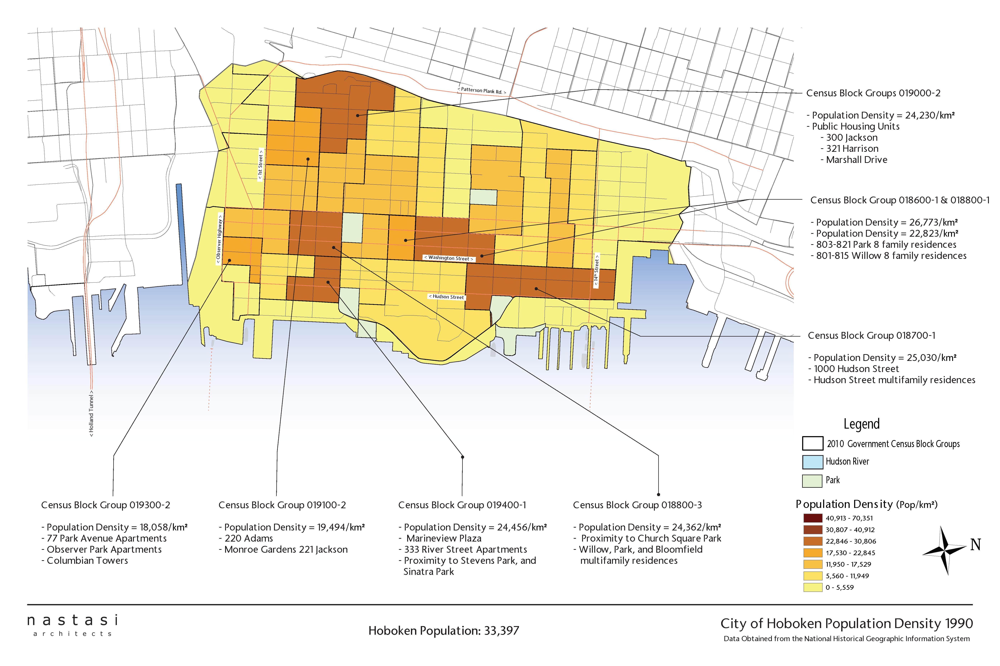
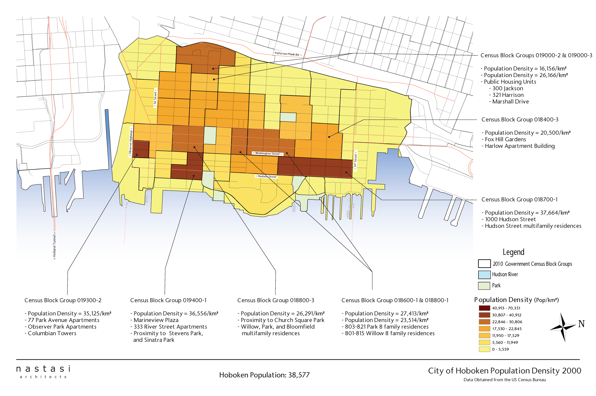
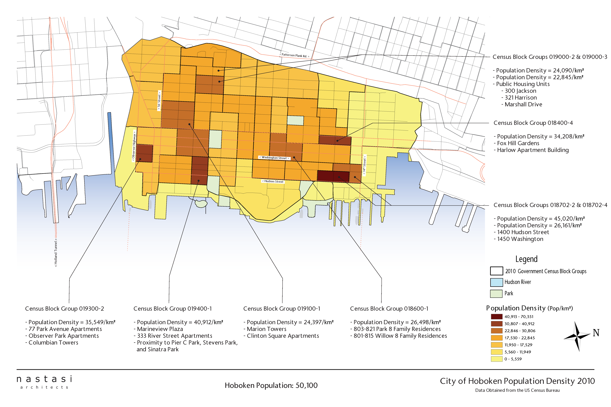
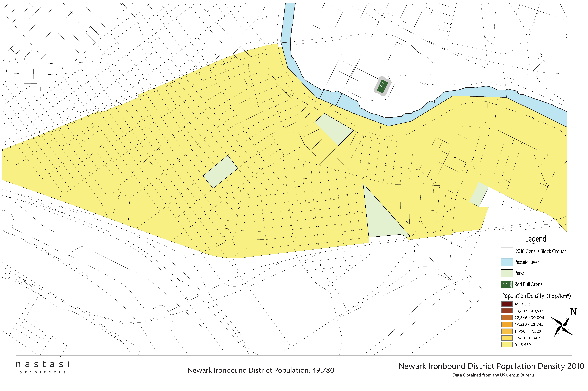
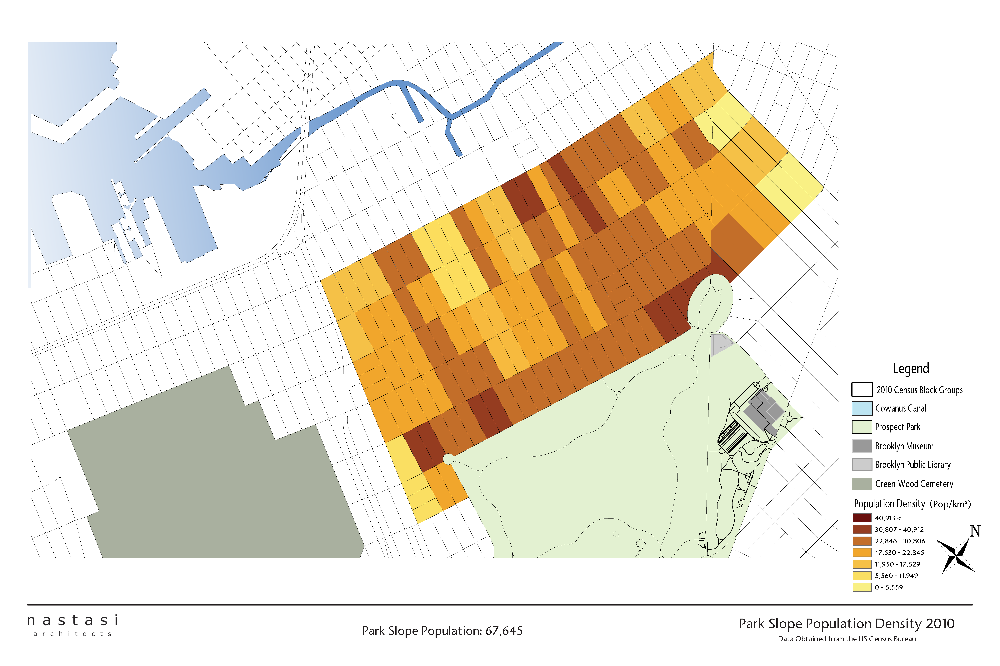
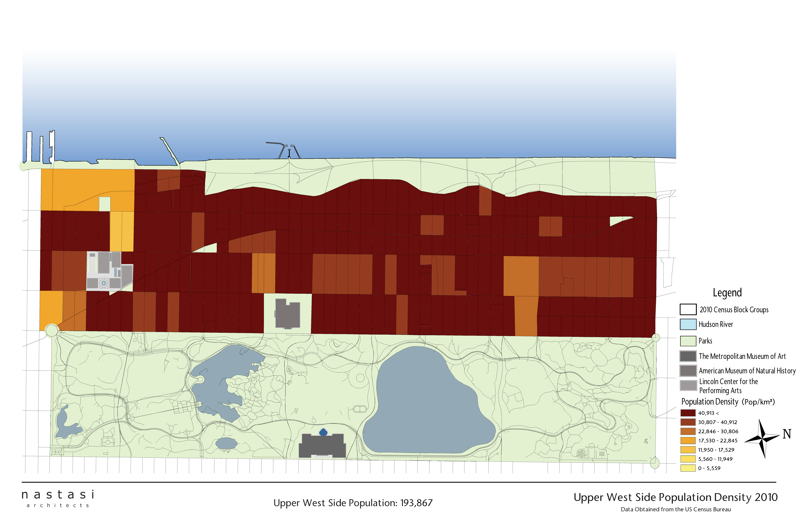
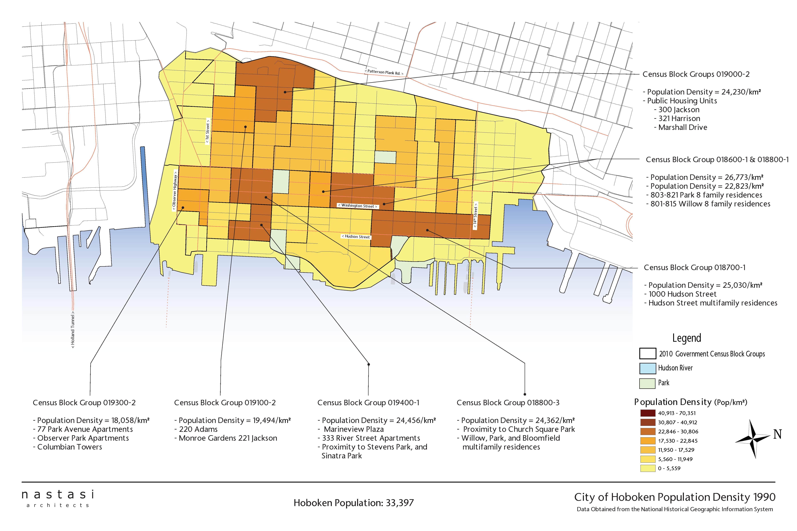
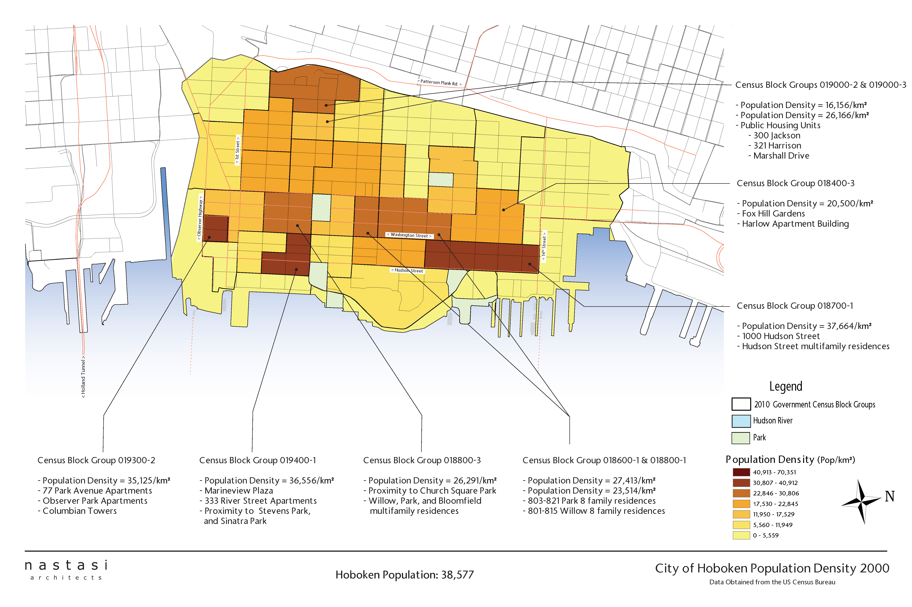
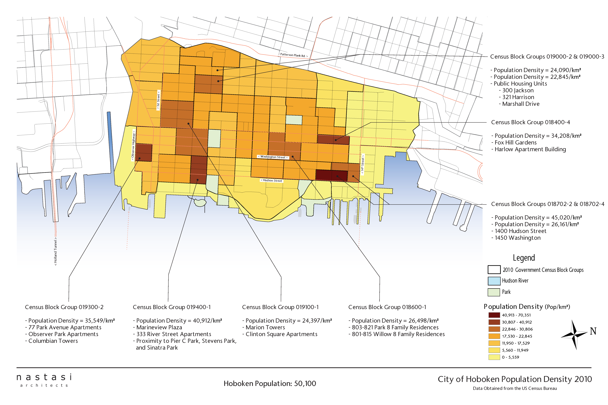
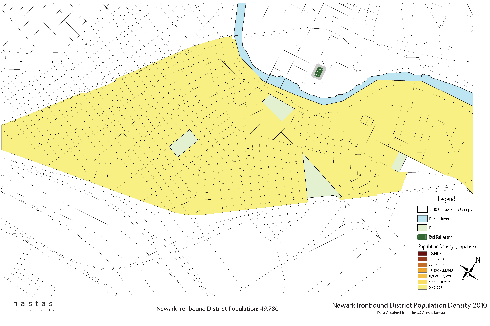
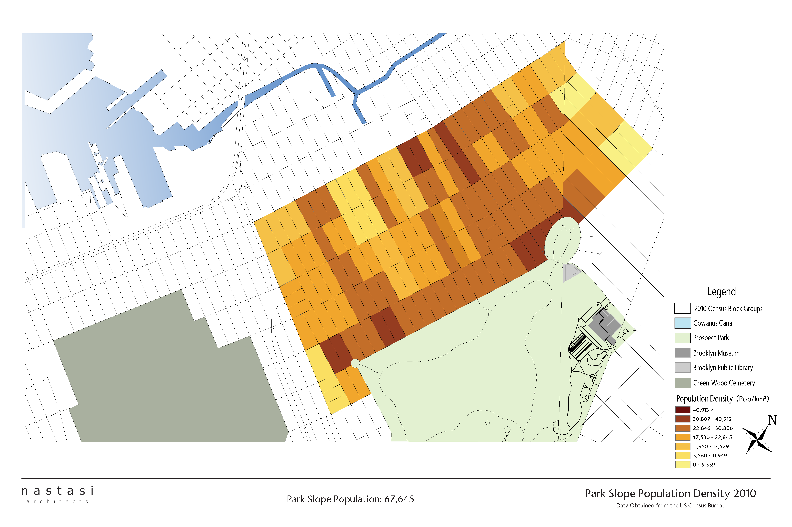
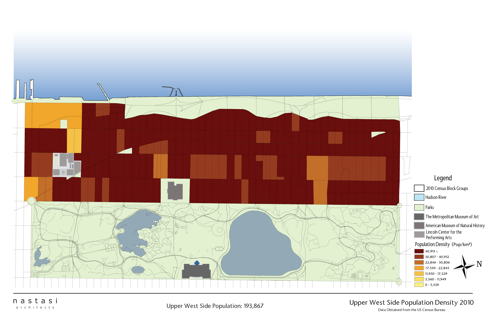